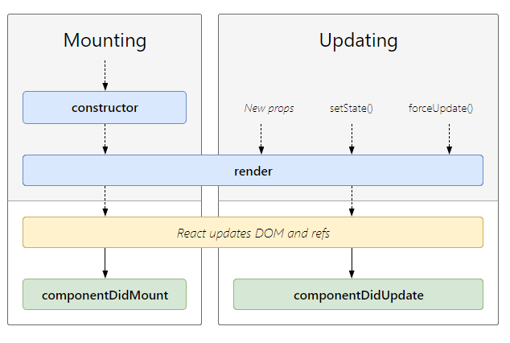

Component based 的概念與早期伺服器渲染 (server render) 頁面的模式不同，SPA (Single Page Application) 完全由前端元件控制，所以元件狀態 (state)、性質 (props) 就需要規範，目前較主流的方式有 MVVM 以及 FLUX。
元件化
元件概念蠻推薦這篇介紹 web-components 相關知識的文章，目前 web-components 還只是個潮潮的想法，陸續有越來越多的支持，像是對面當紅 wechat 小程序中的 module，其實就有去實做出來，而 .vue 檔的 component 就相當於 web-component 中定義元件的 template，元件因此成為一個封閉環境，運作不再需要依賴其他外部資源，透過特定的寫法就能夠被 import 進程式中重複使用，.vue 的實作方式也讓潮潮的想法有了更好的相容性。
和 React 及 Angular 比起來，vue 少了很多的假設多了很多彈性也能夠很簡單的做到雙向資料流，當然也可以參考 Redux 的想法把狀態統一管理，像是偷懶的把資料放在 localStorage 中，這樣就可以統一取得，可是其實還是少了順序性 Orz
元件的狀態與性質
最近比較認真看 React component 相關的東西，發現了一些跟科學上的小關聯，來~讓我們看下去，React 元件有兩種 Instance Properties，分別是 props 和 state
- props 是從其他元件傳過來的不可改變
- state 則是可以透過運算或條件來改變的
看到這些不小心就回想起熱力學老師說過
什麼是 Property? 性質??!!? 老師給你０分 XDDD
Property 會是在一個系統中且可量測的某種狀態，系統簡單來看可以當作是被限制住的空間也就是 control volume，若是在 control volume 中，狀態能成為 homogeneous 的 steady state，也就是達到巨觀可量測的條件，那麼那個均質的穩定狀態我們就叫做 Property。
元件中的狀態會改變，元件程式最後一行後，狀態也就不會再變化，這時的狀態可以看成是 Property，而穩定的狀態就會顯示在使用者介面上，所以元件中運算的穩定 state 就可以當成 Property 傳遞給所包覆的小元件來使用。
而狀態與性質搭配元件的週期就會引發元件的改變，唯有透過事件觸發取改動狀態或是外設性質的改變才會驅動畫面的渲染。主要常用的也就是 componentDidMount (穩定不在變化後)、componentDidUpdate (被狀態或外設性質觸發改變) 這兩個週期。
更詳細的說明，可以到圖片來源的連結去看看。 (https://projects.wojtekmaj.pl/react-lifecycle-methods-diagram/)

資料流
UI 為顯示資訊的媒介，當然會和資料產生關係，這時就出現下面的情形:
- 資料的改變是否影響 UI 的呈現?
- UI 的操作是否影響資料的改變?
最天真的做法是直接在 Dom 中綁定資料，但這樣程式就必須每次都要去找 Dom 來改變資料，後來就出現了 Model(資料) 和 View(UI) 的概念，透過直接操作 Model 來影響 View，而 Model 和 View 之間的關係則由套件幫我們處理。
第一種 Model => View，就是俗稱的單向資料流(綁定) one-way data flow(binding)。常見的 React 以及 FLUX 就是這個概念，FLUX 就像是定義更明確的 MVC，在關注點分離的基礎上，讓資料流變得更多限制可預測。
另一種會互相影響的就是 Model <=> View ，也就是雙向資料流(綁定) two-way data flow(binding)。其中有個 MVVM 的設計模式，Model <=> ViewModel <=> View透過操作 ViewModel 來顯示 View 及改變 Model，像是 Vue.js 中的 v-model，舉例來說<input v-model="message">用 MVVM 來看就是 input <=> v-model <=> message。
Vue.js 官方的文件簡單易懂，實際上可以試著外掛到原有的程式上試玩，很快就可以有初步的了解了!!! Vue.js 就是基於 MVVM 概念實作的框架，剛開始建議直接使用 vue-cli，vue-loader 等等基本的配置檔都配置好了，可以完全用元件的概念去寫程式，vue-loader 讓我們能夠可以把所需都裝在一個 .vue 檔裡，css 也提供了 scoped 這個強大到讓人可以偷懶的功能 XDDD
因為 vue 蠻熱門的關係，所以當然有相當多的資源可以使用，也有用來實作 SPA 路由的 vue-router 和狀態管理的 vuex，所以看得出來若是需要多的功能，都是需要自己額外加裝的 XDDD 最重要的是目前大部分主流的編輯器也都有蠻好的支援了~!!!
目前有用過 Vue 做過以下兩個 SPA
有限狀態機
UI 同時也會受到使用者操作影響，加上 Javascript 是本身單執行緒的關係，資料也會因非同步 (ajax, setTimeout) 改變，操作加上非同步的變化，正確處理 Model 和 View 就變得越來越困難且複雜，舉登入搶票這個動作來說，拆解成底下四個步驟
- 按下 Login 按鍵
- 發出非同步請求
- 確認帳號資訊
- 搶票
- 進入搶票流程
- 完成搶票
若是在第五步完成前，使用者瞬間又按下了搶票，此時使用者是否算是成功呢?
javascript-state-machine是一套實作狀態機的函式庫，透過觸發事件來做狀態的改變，而狀態改變的路徑是事先嚴格定義清楚的，像是我們透過發請求的事件來處發狀態從未登入移動到處理中
未登入 —–> 處理中 —–> 登入
ＯＯＯ發請求ＯＯＯ確認
加入了狀態的概念後，我們可以更快速的去理解剛剛的問題，最後也可以透過按登出按鍵的事件，來讓登入狀態回到未登入，使用起來的缺點是，狀態越定義越多時，畫出來的狀態遷移圖以及事件定義會變成世界奇觀，提個關鍵字 Redux-saga?
狀態管理
元件化的影響，當動態的資料越來越多時，Vuex 還有 Redux 就定義出了一個叫做 Store 的名詞，裡面用一般的物件儲存了目前的狀態，下面就是官網範例中存了 todos 的狀態，可以看出待辦一已完成，待辦二未完成
{
"todos": [
{
"id": 0,
"text": "待辦一",
"completed": true
},
{
"id": 1,
"text": "待辦二",
"completed": false
}
]
}透過把狀態放在統一的位置外加受限制的資料流方向，提倡 single source of truth，所有的事件都只能特殊操作來改變 Store 裡的狀態，UI 也是依照特定的程序來依照 Store 來顯示，好像就簡單許多了，但說實話懂概念跟實際上用在專案裡還是有一段距離 XDDD
喜歡這篇文章，請幫忙拍拍手喔 🤣
站內搜尋
其他相關文章

Reactjs 問世十年後的開發體驗
2024-04-06
不在大型專案導入 React.js 的 5 個原因
2021-02-28
最新的文章
人生的貪婪演算法
2024-10-05JavaScript 模組超進化
2024-10-05Zustand 關於那隻熊你了解多少
2024-10-05